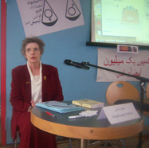
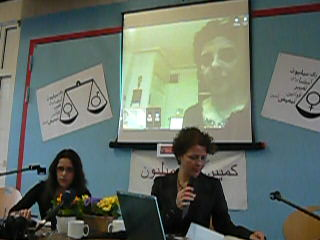
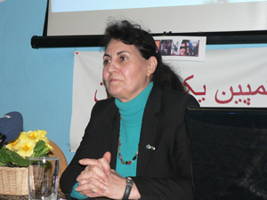
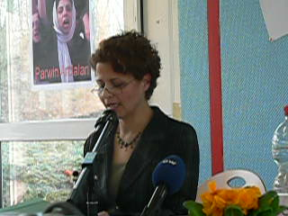
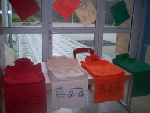
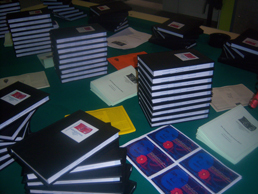

پذيرش > اخبار > بزرگداشت روز جهانی زن در شهربوخوم آلمان

 بزرگداشت روز جهانی زن در شهربوخوم آلمان بزرگداشت روز جهانی زن در شهربوخوم آلمان
23 اسفند 1387 - - نسخه قابل چاپ
کمپین آلمان - به مناسبت گرامیداشت روز جهانی زن، نمایندۀ کمپین در دوسلدورف، روز یکشنبه 8 مارس سمیناری به دو زبان فارسی و آلمانی در شهر بوخوم برگزار کرد که با استقبال شایان توجهی مواجه شد.
علی طایفی ، پروین اردلان (ارتباط اینترنتی) و رضوان مقدم سخنرانان این برنامه بودند و ناصر ایرانپور ترجمه همزمان سخنرانی ها را بر عهده داشت.
برنامه با سخنان
کوتاه میهمان افتخاری، خانم دکتر "فون رنسه" نمایندۀ سابق پارلمان ایالت نوردراین-وستفالن آغاز شد.
"چالشهای زنان ایران در چرخۀ زندگی" عنوان سخنرانی علی طایفی، جامعه شناس مقیم سوئد و رئیس انجمن جامعه شناسان بدون مرزـایران بود.
 وی با پشتوانۀ آمار و ارقام و تحلیلی جمعیت شناختی، مشکلات زنان ایران را در سه مرحلۀ " از تولد تا ازدواج" ، " از ازدواج تا طلاق" و " سالخوردگی تا پس از مرگ" توصیف کرد. وی با پشتوانۀ آمار و ارقام و تحلیلی جمعیت شناختی، مشکلات زنان ایران را در سه مرحلۀ " از تولد تا ازدواج" ، " از ازدواج تا طلاق" و " سالخوردگی تا پس از مرگ" توصیف کرد.
به عقیدۀ او در مرحلۀ اول حقوق زنان در اشکال زیر نادیده انگاشته می شود:
ـ فرزندخواهی (تاکید بر پسرزایی و بی ارزشتر بودن دختر)
ـ نامگذاری بر دختران (سلطۀ مردان خانواده در نامگذاری برای فرزندان دختر)
ـ تفکیک جنسیتی زمان و مکان (محرومیت زمانی و مکانی آموزش برای جنس دختر در فرایند جامعه پذیری)
ـ ورود به مدرسه (نرخ پایین مشارکت دختران بخاطر عدم اهتمام والدین به تحصیل آنها، پوشش محدود کننده در سنین رشد)
ـ ازدواج اجباری (فرزندزایی در سنین کودکی، ممانعت از ادامۀ تحصیل دختران ازدواج کرده، خشونت خانگی و خودکشی، روسپیگری از طریق فروش دختران در سن بلوغ با سرپوش ازدواج)
در مرحلۀ دوم یعنی ازدواج تا طلاق و دورۀ بزرگسالی مشکلات زنان بیشتر است و نابرابری به شکل عریان تری در صورت های زیر رخ می نمایاند:
ـ نحوۀ همسرگزینی (انتخاب های سنتی بر خلاف خواست دختر، فاصلۀ سنی بالای زن و مرد، ازدواج زن بخاطر ترس از آیندۀ مبهم)
ـ مهریه و حق طلاق (اختصاص حق طلاق به مردان و نقش کمرنگ زن در تعیین نرخ مهریه)
ـ حق حضانت فرزند (اختصاص حق نگهداری فرزند بالای 7 سال به مرد)
ـ سرپرستی خانواده (عدم وجود کمترین امنیت شغلی، اقتصادی و اجتماعی برای زنان سرپرست خانواده)
ـ خشونت خانگی علیه زنان (تجربۀ بیش از 67 درصد زنان ایرانی)
ـ بکارت زنان (معیاری مسلط برای احراز پاکدامنی و اخلاق)
ـ اشتغال (نسبت بسیار پایین مشارکت زنان در مشاغل رسمی تولیدی و خدماتی و نادیده گرفته شدن بیش از نیمی از آنان تحت عنوان خانه دار)
ـ مسافرت (لزوم همراهی دختر توسط پدر تا زمان ازدواج و پس از آن اجازۀ شوهر)
ـ تحصیل (تفوق اذن پدر و شوهر بر میل دختر)
ـ حقوق بعد از طلاق (عدم حمایت دولت و نبود تامین اجتماعی، حتی عدم امنیت در حفظ حریم خصوصی)
ـ داشتن رابطۀ جنسی خارج از محدودۀ خانواده (سنگسار زن)
ـ چندزنی (حق داشتن چهار زن رسمی و تعداد بی شمار صیغه برای مردان)
در مرحلۀ سوم، موقعیت زنان ایرانی در دورۀ سالخوردگی تا پس از مرگ مورد ارزیابی قرار گرفت و تو صیف شد.
در این مرحله نیز حقوق زنان در مواردی بصورت قانونی زیر پا گذاشته می شود از جمله:
ـ عدم حمایت دولت از زنان سالمند بیوه یا طلاق گرفته
ـ حق ارث زنان از همسرشان و یا دختران از پدر (تخصیص مقداری برابر با یک چهارم سهم ارث فرزندان برای مادر، یک دوم سهم ارث فرزندان پسر برای دختر)
ـ ازدواج مجدد زن (مداخله مردان خانواده در تعیین نحوۀ ازدواج مجدد زنان طلاق گرفته یا همسر فوت کرده)
ـ کتمان هویت شخصی زن حتی پس از مرگ (اطلاعیه های رسمی بدون مشخصات و عکس واقعی متوفی)
شاهین نجفی نیز در بخشی از برنامه به اجرای قطعاتی از آثار خود پرداخت.

در ادامۀ برنامه پروین اردلان، از بنیانگذاران کمپین یک میلیون امضا و برنده جایزه اولاف پالمه در سال 2008 ، پیام خود را از طریق ارتباط اینترنتی به اطلاع شرکت کنندگان در سمینار رساند که متن کامل آن را در اختیارمان قرار داده است:
" با سلام به دوستان عزیزم در کمپین آلمان و سپاس از دعوت من برای شرکت در بزرگداشت 8 مارس در آلمان. متاسفانه به دلیل ممنوع الخروج بودن و ادامه این روند غیرقانونی نتواستم خدمت تان باشم. از این رو چند کلمه ای با شما سخن می گویم.

سخت است در آستانه 8 مارس در ایران باشی و این روز را به همه زنان و فعالان جنبش زنان تبریک بگویی. سخت است باور کنیم عالیه اقدام دوست که دوران جوانی اش را به خاطر ابراز عقیده و آزادی سیاسی زنان ومردان در زندان های پس از انقلاب گذرانده است اکنون دوران میانسالی اش را به خاطر حق خواهی و برابری حقوقی زنان و مردان در همین زندان ها بگذراند. این تنها عالیه های میانسال این جنبش نیستند که در زندان اند که روناک صفازاده و زینب بایزیدی از دیگر فعالان جوان کرد، در بند چنین زندانی گرفتارند. البته، این پایان کار نیست که آغاز برخوردی جدی تراست. اکنون بسیاری از زنان و مردان حق طلب را پشت در دادگاه های تجدید نظر به انتظار نشانده اند تا یا انفعال شان بکشند و یا حکم قطعی ورود به زندان را برایشان صادر کنند.
با وجود این باید خوشحال بود از این که : زنان که از منظر حکومت ایران "ضعیفه" به حساب می آمدند پله به پله به ارتقای شهروندی نائل می شوند. اگر دیروز ضعیفه هایی تحت حمایت شوهر و دولت محسوب می شدیم اکنون به ساحره های خطرناکی بدل شده ایم که تمام برنامه ریزی ها و سیاست گذاری های حقوقی، شهری، امنیتی، جنسیتی، خانوادگی و…از مرد محوری به زن محوری در جهت سرکوب زنان ارتقا یافته است. پس مقاومت مان را تبریک می گویم هرچند به بهای سنگین حضور عالیه هایمان در زندان.
متاسفانه در این روزهای شادمانی زنان در بسیاری از کشورهای جهان نمی توانم از دلتنگی ها و آرزوهایم نگویم. بگذارید بگویم که دلم برای حضور آزادانه در خیابان های شهر، بی نگاه پلیس های امنیتی محسوس ونامحسوس و ویکتوریایی های ضد جنس زن؛ برای تظاهرات و راه پیمایی ها و اعتراض های خیابانی غیر رسمی و حکومتی؛ برای خروش و خیزش 57 زنان ایران-که در آن تاریخ شاهدخردسالش بودم-؛ برای دیدن روزهای خلاص از ویلچرهای نامحسوس که قوت حرکت را با ضرب زور و بازداشت و تعلیق و حبس و …از ما ستانده و عقل مصلحت اندیش و مال اندیش را جانشین آن کرده؛ برای دوران غیر کوتوله گی و نه اکنون، که خواسته های انسانی و بدیهی چون عدالت خواهی و حق خواهی و برابری خواهی را یا به سخره می گیرند و یا با نعش کش های انسانی به مسلخ می برند؛ برای رقص گیسو هایمان در باد؛ و برای شادمانی فریاد زنان و مردان در کارناوال های رنگین شادمانی در سرزمین پهناورمان تنگ شده است.
ما که نمی توانیم، شما کمی از آرزوها و دلتنگی هایمان را فریاد کنید! و مارش زنان را در سراسر جهانی که به آزادی و اعتراض ارج می نهد شکل دهید.
پروین اردلان"
رضوان مقدم، از طراحان اولیه کمپین، نیز در مورد "چگونگی شکل گیری کمپین" به ایراد سخنرانی پرداخت، که متن کامل آن به شرح زیر است:

" با درود به زنان ازاده و برابری خواه در سرتا سر جهان و تبریک به مناسبت روز جهانی زن
پرداختن به ریشه ها و زمینه های تکوین. بروز ویا شکل گیری هر حرکتی از ان جا اهمیت پیدا می کند که که می تواند شالوده و اساس حرکت ها ی کنونی و اینده را تشکیل دهد .
یکی از وقایعی که امروز قرار است به ان پرداخته شود چگونگی شکل گیری کمپین یک میلیون امضا برای تغییر قوانین تبعیض امیز است .
پس از انقلاب 22 بهمن 57 و از همان ابتدای کار زنان شاهد از دست دادن حقوقی شدند که حاصل مبارزات زنان برابری خواه از مشروطه و حتی قبل از ان بود .
اولین اعتراض زنان پا مطرح شدن حجاب اجباری توسط ایت اله خمینی 2 هفته پس از انقلاب بود در استانه 8 مارس تظاهراتی گسترده در چند نقطه شهر تهران و چندین شهرستان شکل گرفت .اگر چه زنان معترض مورد ضرب وشتم وتوهین تمامیت خواهان قرار گرفتند اما حاصل ان اعتراضات .عقب نشینی موقت حکومت نوپای جمهوری اسلامی در برابر مساله حجاب بود.انقلاب منافع زنان را نشانه گرفته بود و داستان به حاشیه راندن زنان ادامه داشت در خرداد58 قانون حمایت خانواده لغو شد پس از ان زنان مگر تعدادانگشت شماری ان هم از روی مصلحت از مراکزتصمیم گیری کنار زده شدند ..و به سرعت ازادی و برابری شد خواب وخیال .هر گونه اعتراضی انگ ضد انقلاب می خورد . از یک طرف وضع قوانین و مقررات تبعیض امیزو اعمال فشار گروه های حاکم و قدرت مداران بر زنان وازطرفی مقاومت زنان اغاز شد و این گونه بود که زنان به تدریج شیوه های خاص خود را برای به چالش کشاندن فرهنگ مرد سالارانه و تلاش برای کسب برابری اتخاذ کردند. و در جهت تحقق مطالبات برابری خواهانه به مبارزه با تبعیض و تبعیض گر پرداختند . از ویژگی های ملی و فرهنگی خود استفاده کردند . نا فرمانی مدنی پیش گرفتند از نظر دانش خود را ارتقا دادند و در عرصه های مختلف توان خودرا به نمایش گذاشتند در عرصه هنر .ادبیات .تحصیلات و حرفه اموزی از مردان پیشی گرفتند . دو سوم ظرفیت دانشگاه را در اختیار گرفتند به قوانین تبعیض امیز نه گفتند .
حدود دو دهه روز زن را در خانه ها و حتی در جمع های چند نفره جشن گرفتند . در همان جمع های کوچک به طرح مسایل زنان پرداختند . هم دیگر را یافتند . و تلاش کردند تا این جمع ها را به فضا های عمومی منتقل کنند .
پس از پیروزی خاتمی و اصلاح طلبان در سال 76 تاسیس و تشکیل سازمان های غیر دولتی به ویژه در حوزه ی زنان گسترش یافت . زنان بسیاری که پیش از ان گرایشات سیاسی داشتند. در حوزه اجتماعی فعال شدند .
در سال 1382 (2003) واقعه ای مهم و تاثیر گذار در عرصه اجتماعی به ویژه زنان رخ داد یعنی اعطای جایزه صلح نوبل به خانم شیرین عبادی .گروهی از زنان فعال در ان جی او ها و تعدادی هم به صورت منفرد گرد هم جمع شدند و مراسم استقبال از ایشان در فرودگاه سازمان دهی شد .و نطفه هم اندیشی فعالان حقوق زن از این جابسته شد .
جمع هم اندیشی متشکل از زنانی با گرایشات مختلف فکری . بود که یا در سازمان های غیر دولتی فعال بودند و یا انفرادی شرکت می کردند و یا این که گرایشات سیاسی داشتند مثل حزب مشارکت . در جمع هم اندیشی نماینده گان حدود 40 سازمان غیر دولتی شرکت داشتند .به دلیل ترکیب غیر هم گون هم اندیشیی بودکه فرا جناحی و فرا سیاسی عمل می کرد مدیریت گروهی و غیر متمرکز بود . ما تصمیم گرفته بودیم صرف نظز از اختلاف سلیقه ها و دیدگاه های سیاسی واجتماعی با هم کار کنیم . همه ما یک هدف داشتیم تشکیل قدرتی یگانه برای بهبود وضعیت زنان در مباحثی که در جلسات مختلف طرح می شد و وقتی تجاربمان را با هم در میان گذاشتیم به این نتیجه رسیدیم که وجود قوانین تبفیض امیز اساسی ترین مشکل زنان جامعه است . در یکی از همان جلسات بود که دورنمای هم اندیشی را تعیین کردیم .ازادی و برابری میان زنان ومردان و رفع هر گونه تبعیض جنسیت به منظور جامعه ای عاری از خشونت و بی عدالتی توام با صلح و همبستگی / و شعاری هم انتخاب کردیم ازادی برابری عدالت جنسیتی .
در جمع هم اندیشی بود که تصمیم گرفته شد تا اکسیون هایی در اعتراض به قوانین تبعیض امیز صورت گیرد . پس از گفتگو های بسیار به این نتیجه رسیدیم که قانون اساسی موجود به ویژه در مورد زنان در مواردی مبهم ونا کافی وجود و حضور نهادهای انتصابی به محدودیت های موجود در خصوص تصویب قوانین به نفع زنان دامن می زند و با وجود نهادهای تفسیر کننده وضع قوانین مترقی دشوار است. یکی از مهمترین کار های هم اندیشی برگزاری تجمع 22 خرداد 84 بود . جند محل برای بر گزاری تجمع پیشنهاد شد که دانشگاه تهران با 14 رای برای بر گزاری تجمع انتخاب شد .
در تجمع خرداد84 ما خواستار تفییر قانون اساسی و تصریح حقوق زنان در قانون اساسی بر اساس میثاق های بین المللی و حقوق بشر جهانی شدیم .در این تجمع اعلام شد دولت جمهوری اسلم به رغم امضای بسیاری از کنوانسیون ها ی بین المللی و از جمله حقوق بشر قوانینی در خصوص زنان وضع کرده که مغایرت اشکار با این قوانین دارد و ما خواستار تغییر قوانین تبعیض امیز هستیم . برخی از شعارهای این بود .ما زنیم انسانیم اما حقی نداریم و یا عدالت حقوقی کف مطالبات است . و در مراسم پایانی بیانیه هم اندیشی خوانده شد و اعلام شد که تا حصول نتیجه به حرکت خود ادامه می دهیم .
جند ماه بعد از برگزاری 22خرداد بین سه گروه از اعضای هم اندیشی مشکلاتی بروز کرد که در جایی دیگر و زمانی مناسب به پرداخته خواهد شد . گرد هم ایی 8 مارس 84 با هم اندیشی بدون شرکت فعال این عزیزان و در پارک دانشجو برگزار شد که البته با سرکوب نیروهای انتظامی مواجه شد ودر همین مراسم بود که خانم بهبهانی80 ساله مورد ضرب وشتم قرار گرفت .
حرکت بعدی هم اندیشی برگزاری مراسم 22 خرداد 85 بود از گروهایی که هم اندیشی را ترک کرده بودند . خواسته شد که بار دیگر به جمع برگردند دو گروه امدندو گروه سوم نمابنده فرستاد و سر انجام با 18 رای موافق و 12 رای مخالف تصمیم به برگزاری مراسم در میدان 7 تیر گرفته شد خواسته های ما در تجمع میدان 7تیردر خرداد85 گامی عقب تراز خرداد84 بود و ما خواستار تغییر قوانین در چارچوب قانون اساسی شدیم در حالیکه قانون اساسی بسیاری از حقوق شهروندی زنان را نادیده می گیرد .در تجمع میدان 7 تیر و در پیگیری خواسته های مطرح شده در بیانیه سال پیش. به طور مشخص خواسته های زنان مطرح شد ه بود اما فبل از بر گزاری مراسم میدان7 تیر و خیابان های اطراف ان در کنترل کامل نیروهای انتظامی قرار گرفته بود . وعلاوه بر ان که اجازه برگزاری مراسم داده نشد 70 نفر از شرکت کننده گان دستگیر و به زندان اوین منتقل شدند . پس از این بنا شد که شیوه کار تغییر کند و مساله ایجاد کمپین مطرح شد . کمپین یک میلیون امضا برای تفییر قوانین تبعیض امیز در حقیقت اقتباسی است از کمپین هایی در کشورهای دیکر و از جمله مراکش که پیش از این انجام شده بود با این تفاوت که در مراکش زنان حمایت مالی پادشاه مراکش را داشتند . ولی در ایران احتمال بروز مخالفت های از طرف حکومت پیش بینی می شد. تفاوت عمده دیگر اموزش چهره به چهره مسا یل حقوقی مربوط به زنان بود .ظرف جلسات متعددسه سند اصلی کمپین تنظیم شد . بیانیه ی کمپین . کتابچه «تاثیر قوانین در زندگی زنان» و طرح کمپین یک میلیون که روش کار و اهداف کمپین را توضیح می دهد .. پنچم شهریور ماه 85 روزی که قرار بود در موسسه ی رعد کمپین یک میلون امضا موجودیت خود را اعلام کند با دستور مستقیم نیروهای انتظامی از ورود افراد به موسسه جلوگیری به عمل امد و مراسم اعلام موجودیت مقابل درهای بسته ی موسسه رعد انجام شد.وکمپین از همان ابتدای کار با مقابله نظام موجود که بر تقویت ارزش های مرد سالارانه پافشاری میکند مواجه شد .اما امروز جنبش زنان نیرومند وگسترده است قوانین خشونت امیز ی که به زن به عنوان جنس دوم می نگرد مورد اعتراض بخش عظیمی از زنان ومردان برابری خواه استبا این که مردان تمامیت خواه در پی حفظ قدرت خود هر گونه حرکت حق طلبانه ی زنان را اقدام علیه امنیت ملی تلقی کرده و با تشدید فشار و صدرو احکامی نا متعارف چون شلاق و زندان برای فعالان حقوق زن سعی در وادار کردن زنان به عقب نشینی و سرکو.ب این جنبش حقیقی دارند. اما همان گونه که قره العین در تاریخ ماندگار شد و بذری کاشت که در نسل های بعد درختی تنومند شد .جنبش زنان ایران نیز ریشه اش به اعماق جامعه رسیده . قوانین موجود در رابطه با زنان دیگر جواب گوی نیاز های فعلی جامعه نیست و خواست زنان ومردان اگاه وبرابری خواه تغییر قوانین تبعیض امیز است. و تا برقراری برابری به حرکت خود ادامه خواهد داد."
سمینار با طرح سوالات شرکت کنندگان و بحث و گفتگو به پایان رسید.
عکس های دیگری از سمینارو تصاویری از تولیدات کمپین شامل تقویم و کیف دستی و...در آلمان
شقایق کمالی، مجری برنامه



کلیه تصاویر این برنامه را در اینجا ببینید:
http://ir-frauenbewegung.blogfa.com/post-109.aspx
http://ir-frauenbewegung.blogspot.com/2009/03/blog-post.html
ارسال به
بالاترین
،
توییتر
،
فریندفید
،
فیسبوک
در همين بخش :
 پروین ذبیحی برنده جایزه حقوق بشری سازمان غيردولتى اتريشى سودويند شد پروین ذبیحی برنده جایزه حقوق بشری سازمان غيردولتى اتريشى سودويند شد
پخش کارت پستال و بروشور در روز جهانی زن در تهران
تمدید زمان برای امضای بیانیهی جمعی از فعالان زن به مناسبت هشت مارس
مجوزی که در نطفه خفه شد
بیش از 2000 امضا در اعتراض به تبعیض های آموزشی به مجلس تحویل داده شد
ديگر بخش ها :
طرح یک میلیون امضا
|
مقالات
|
سایت نوشته ها
|
اخبار
|
گزارش كمپين
|
گفت و گو
|
علیه سکوت
|
كوچه به كوچه
|
نامه های شما
|
گزارش ویژه
|
گفتگو با اعضا
|
ویژه سالگرد کمپین
|
تصویر برابری
|
دل آرام علی
|
تریبون
|
مقالات
|
تاریخ شفاهی
|
خارج از چارچوب
|
کتابخانه
|
درباره کمپین
|
کمپین در شهرها
|
کمپین در بند
|
صدای تغییر
|
ویژه 22 خرداد
|
لایحه حمایت از خانواده
|
گالری
|
عشا مومنی
|
امیر یعقوبعلی
|
خدیجه مقدم
|
راحله عسگری زاده و نسیم خسروی
|
پروین اردلان،جلوه جواهری، مریم حسین خواه، ناهید کشاورز
|
زینب پیغمبرزاده
|
سعیده امین، سارا ایمانیان، محبوبه حسین زاده، ناهید کشاورز و همایون نامی
|
احترام شادفر
|
نسیم سرابندی زاده،فاطمه دهدشتی
|
وبلاگ مهمان
|
پرونده خرم آباد
|
دستگیری ها
|
مریم مالک
|
پرستو اللهیاری
|
مهرنوش اعتمادی
|
سمیه رشیدی
|
Other Languages
|
همراهان
|
«فراخوان کمپین ده روز با بهاره هدایت»
| English
|